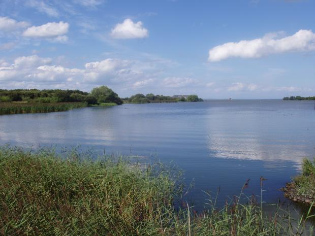
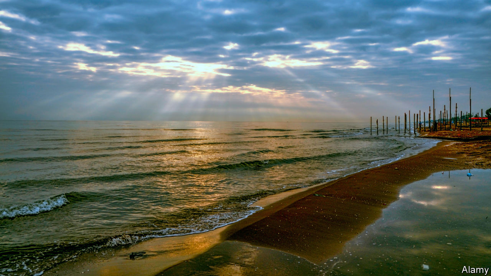
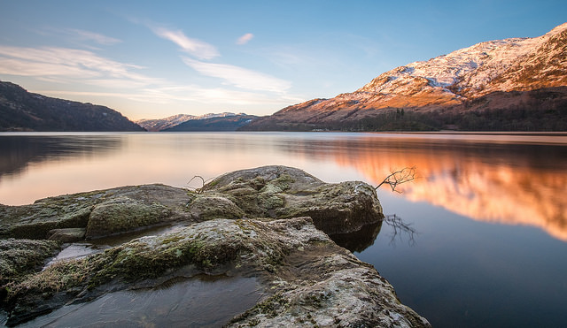
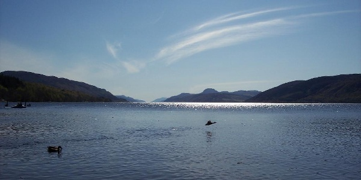
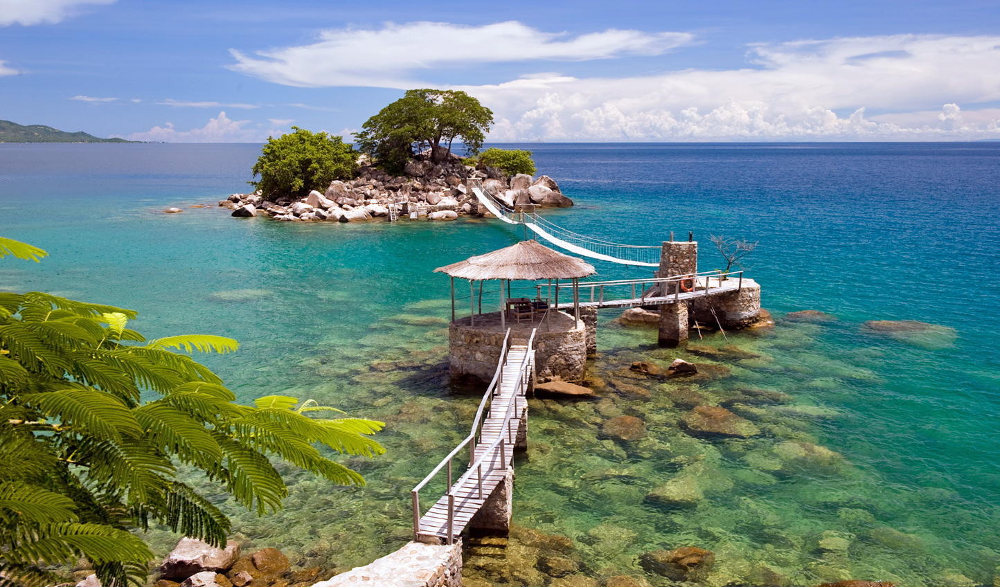

The 10 most famous lakes in the world
Lakes are freshwater bodies that are enclosed by land on all sides.
The primary difference between a lake and a river is that rivers are
connected to another body of water- whether it be an ocean, a sea,
a lake, or another river. Lakes, however, have no place to go.
Read on to discover 10 of the world's most famous lakes.
1.Lake Baikal(Russia)

This lake is located in the Republic of Buryatia(in Russia's Irkutsk
province).
Lake Baikal holds two impressive records: it has the largest water
volume of any continential lake on the planet, and it is the world's
deepest lake. On a rough estimate, this lake provides 20% of the
world's fresh water.
Depth -1,741 meters
(5,315 feet)
Surface areas -31,494
sq km (12,160 sq mi)
Volume -22,995 cu km
(18,760 cu mi)

Lough Neagh is a freshwater lake in Northern Ireland. It is the largest
lake in the British Isles, and one of the forty largest lakes in Europe.
It covers an area of 381,74 square kilometers, which is approximately
147,39 square miles.
3. Caspian Sea (Russia and Iran)

The Caspian Sea, named after the Kaspi peoples who used to live in
Transcaucasia, is an ocanic lake in Central Asia. This lake is in both Russia
and Iran. We've all heard of the Caspian Sea, but many people might not know
that it's not a sea at all. In fact, it is an oceanic lake.
According to area and depth, it is the world's first-largest and
third-deepest lake.
Depth -1,025 meters (3,363 feet)
Surface Area -371,000 sq km
(143,244 sq mi)
Volume -78,200 cu km
(18,760 cu mi)
4. Lake Superior (Northh America)

Superior is the largest of the five Great Lakes. To the south, it is
bounded by Michigan and Winsconsin, and to the north, it is bounded by
Minnesota and the Canadian province of Ontario.
In terms of surface area, this lake is considered one of the planet's
largest freshwater lakes. It has a volume of 12,100 cubic kilometers ,
which is approxiamately 2,903 cubic miles.
5. Loch Lomond (Scotland)

This freshwater lake is in the highlands and is the largest of all Scottish
lakes. The famous Inchmurrin, the largest freshwater island in the British
Ilses, is in this lake.
For the people of Scotland, especially those from Glasgow, this is a pure
leisure destination. It covers an area of 71,12 square kilometers
(27,46 square miles).
6. Lake Victoria (Africa)

Lake Victoria is the largest reservoir feeding the river Nile. Victoria
is one of the African Great Lakes. It is also known as Victoria Nyanza,
Sngo, Lolwe, and Nalubalee. This lake is mainly in Uganda and Tanzania,
but a small part of it is in Kenya. The area of Lake Victoria is 69,485 square kilometers (26,828 square miles).
Lake Victoria is home to more than 200 species of fish, among which
Tilapia is the most important from an econmic point of view.
7. Loch Ness (Scotland)

This lake has largest volume of fresh water in Great Britain and
contains more fresh water than all the lakes in England and Wales
combined. At some points, it is deeper than London's BT Tower, with a
depth of 230 meters (755 feet). It is the second-deepest lake in
Great Britain (Loch Morar comes in first).
The surface area of this lake is almost 56,64 square kilometers
(21,87 square miles). Like many other lakes in Scotland, Loch Ness is also said to have some aquatic monsters in it.

Great Slave is the second-largest freshwater lake in Canada, after
Great Bear Lke. It is located in the Northwest Territories. This lake
has a depth of 614 meters (approximately 2,015 feet). It is the deepest
lake in North America and one of the top 10 deepest lakes in the world.
This lake is named after the Slavey people-an A merican Indian group in
the region. This lake has a small fishing industry for trout and whitefish
and has many small islands in it.

Lake Malawi, also known as Lake Nyasa, is in East Africa. It is the third
largest of the African Great Lakes (also called the East African Rift Valley
Lakes). The volume of this lake is 8,400 cubic kilometers (approximately
2,015 cubic miles).
In 1616, a Portuguese man named Casper Boccaro reported this lake. The
first person to reach this lake from the south was a British explorer
named David Livingstone in 1859.